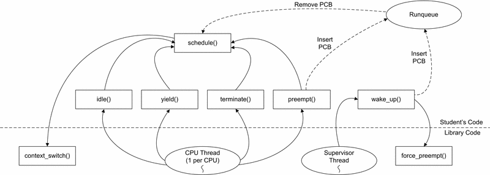

CS2200 Introduction to Systems and Networks
Project 4
Fall 2013
Overview
In this project, you will implement a multiprocessor operating system simulator using a popular userspace threading library for linux called pthreads. The framework for the multithreaded OS simulator is nearly complete, but missing one critical component: the CPU scheduler! Your task is to implement the CPU scheduler, using three different scheduling algorithms.
NOTE: MAKE SURE THAT MULTIPLE CPU CORES ARE TURNED ON IN YOUR VIRTUAL MACHINE
We have provided you with source files that provide the framework for your simulator. You will only need to modify answers.txt and student.c. However, just because you are only modifying two files doesn't mean that you should ignore the other ones - there is helpful information in the other files. Information about using the pthreads library is given in Problem 0.
We have provided you these files:
- Makefile - Working one provided for you; add as you wish but don't break it.
- os-sim.c - Code for the operating system simulator which calls your CPU scheduler.
- os-sim.h - Header file for the simulator.
- process.c - Descriptions of the simulated processes.
- process.h - Header file for the process data.
- student.c - This file contains stub functions for your CPU scheduler.
- student.h - Header file for your code to interface with the OS simulator
Scheduling Algorithms
For your simulator, you will implement the following three CPU scheduling algorithms:
- First In, First Out (FIFO) - Runnable processes are kept in a ready queue. FIFO is non-preemptive; once a process begins running on a CPU, it will continue running until it either completes or blocks for I/O.
- Round-Robin - Similar to FIFO, except preemptive. Each process is assigned a timeslice when it is scheduled. At the end of the timeslice, if the process is still running, the process is preempted, and moved to the tail of the ready queue.
- Static Priority - The processes with the highest priorities always get the CPU. Lower-priority processes may be preempted if a process with a higher priority becomes runnable.
Process States
In our OS simulation, there are five possible states for a process, which are listed in the process_state_t enum in os-sim.h:
- NEW - The process is being created, and has not yet begun executing.
- READY - The process is ready to execute, and is waiting to be scheduled on a CPU.
- RUNNING - The process is currently executing on a CPU.
- WAITING - The process has temporarily stopped executing, and is waiting on an I/O request to complete.
- TERMINATED - The process has completed.
There is a field named state in the PCB, which must be updated with the current state of the process. The simulator will use this field to collect statistics.

Figure 1: Process States
The Ready Queue
On most systems, there are a large number of processes, but only one or two CPUs on which to execute them. When there are more processes ready to execute than CPUs, processes must wait in the READY state until a CPU becomes available. To keep track of the processes waiting to execute, we keep a ready queue of the processes in the READY state.
Since the ready queue is accessed by multiple processors, which may add and remove processes from the ready queue, the ready queue must be protected by some form of synchronization--for this project, it will be a mutex lock. The ready queue SHOULD use a different mutex than the current mutex.
Scheduling Processes
schedule() is the core function of the CPU scheduler. It is invoked whenever a CPU becomes available for running a process. schedule() must search the ready queue, select a runnable process, and call the context_switch() function to switch the process onto the CPU.
There is a special process, the idle process, which is scheduled whenever there are no processes in the READY state.
CPU Scheduler Invocation
There are four events which will cause the simulator to invoke schedule():
- yield() - A process completes its CPU operations and yields the processor to perform an I/O request.
- wake_up() - A process that previously yielded completes its I/O request, and is ready to perform CPU operations. wake_up() is also called when a process in the NEW state becomes runnable.
- preempt() - When using a Round-Robin or Static Priority scheduling algorithm, a CPU-bound process may be preempted before it completes its CPU operations.
- terminate() - A process exits or is killed.
The CPU scheduler also contains one other important function: idle(). idle() contains the code that gets by the idle process. In the real world, the idle process puts the processor in a low-power mode and waits. For our OS simulation, you will use a pthread condition variable to block the thread until a process enters the ready queue.
The Simulator
We will use pthreads to simulate an operating system on a multiprocessor computer. We will use one thread per CPU and one thread as a "supervisor" for our simulation. The CPU threads will simulate the currently-running processes on each CPU, and the supervisor thread will print output and dispatch events to the CPU threads.
Since the code you write will be called from multiple threads, the CPU scheduler you write must be thread-safe! This means that all data structures you use, including your ready queue, must be protected using mutexes.
The number of CPUs is specified as a command-line parameter to the simulator. For this project, you will be performing experiments with 1, 2, and 4 CPU simulations.
Also, for demonstration purposes, the simulator executes much slower than a real system would. In the real world, a CPU burst might range from one to a few hundred milliseconds, whereas in this simulator, they range from 0.2 to 2.0 seconds.

Figure 2: Simulator Function Calls
Sample Output
Compile and run the simulator with ./os-sim 2. After a few seconds, hit Control-C to exit. You will see the output below:
Time Ru Re Wa CPU 0 CPU 1 < I/O Queue <
===== == == == ======== ======== =============
0.0 0 0 0 (IDLE) (IDLE) < <
0.1 0 0 0 (IDLE) (IDLE) < <
0.2 0 0 0 (IDLE) (IDLE) < <
0.3 0 0 0 (IDLE) (IDLE) < <
0.4 0 0 0 (IDLE) (IDLE) < <
0.5 0 0 0 (IDLE) (IDLE) < <
0.6 0 0 0 (IDLE) (IDLE) < <
0.7 0 0 0 (IDLE) (IDLE) < <
0.8 0 0 0 (IDLE) (IDLE) < <
0.9 0 0 0 (IDLE) (IDLE) < <
1.0 0 0 0 (IDLE) (IDLE) < <
......
The simulator generates a Gantt Chart, showing the current state of the OS at every 100ms interval. The leftmost column shows the current time, in seconds. The next three columns show the number of Running, Ready, and Waiting processes, respectively. The next two columns show the process currently running on each CPU. The rightmost column shows the processes which are currently in the I/O queue, with the head of the queue on the left and the tail of the queue on the right.
As you can see, nothing is executing. This is because we have no CPU scheduler to select processes to execute! Once you complete Problem 1 and implement a basic FIFO scheduler, you will see the processes executing on the CPUs.
Test Processes
For this simulation, we will use a series of eight test processes, five CPU-bound and three I/O-bound. For simplicity, we have labelled each starting with a "C" or "I" to indicate CPU-bound or I/O-bound.
| PID | Process Name | CPU / I/O-bound | Priority | Start Time |
| 0 | Iapache | I/O-bound | 8 | 0.0 s |
| 1 | Ibash | I/O-bound | 7 | 1.0 s |
| 2 | Imozilla | I/O-bound | 7 | 2.0 s |
| 3 | Ccpu | CPU-bound | 5 | 3.0 s |
| 4 | Cgcc | CPU-bound | 1 | 4.0 s |
| 5 | Cspice | CPU-bound | 2 | 5.0 s |
| 6 | Cmysql | CPU-bound | 3 | 6.0 s |
| 7 | Csim | CPU-bound | 4 | 7.0 s |
For this project, priorities range from 0 to 10, with 10 being the highest priority. Note that the I/O-bound processes have been given higher priorities than the CPU-bound processes.
Problem 0: pthreads
[0 points]
If you have never used pthreads before (I would be pleasantly surprised if you have), take a minute to look up some documentation, and make a small multi-threaded program where two threads print the numbers 1 - 1000 so that you understand the lifecycle of threads.
We won't be going into detailed examples because there already exist some excellent resources for using pthreads:
An important note for when you get to using pthread_cond_wait: Please please please use it in a while loop instead of an if statement. If you look carefully, the pthread documentation says that pthread_cond_wait may return even without having acquired the lock. Don't worry about this part right now. You'll know when you get to it, and hopefully you'll look back at this when you realize you're typing pthread_cond_wait. This may causes completely untraceable bugs in your programs.
Problem 1: FIFO Scheduler
A. [50 points] - Implement the CPU scheduler using the FIFO scheduling algorithm. You may do this however you like, however, we suggest the following:
- Implement a thread-safe ready queue using a linked list. A linked list will allow you to reuse this ready queue for the Round-Robin and Static Priority scheduling algorithms.
- Implement the yield(), wake_up(), and terminate() handlers. preempt() is not necessary for this stage of the project. See the overview and the comments in the code for the proper behavior of these events.
- Implement idle(). idle() must wait on a condition variable that is signalled whenever a process is added to the ready queue.
- Implement schedule(). schedule() should extract the first process in the ready queue, then call context_switch() to select the process to execute. If there are no runnable processes, schedule() should call context_switch() with a NULL pointer as the PCB to execute the idle process.
Before you begin working please look at the contents of this file os-sim.h for a list of functions prototypes and a description of the currently used data structures.
Once you successfully complete this portion of the project, test your code with ./os-sim 1, and you should see output similar to the following:
Time Ru Re Wa CPU 0 I/O Queue
===== == == == ======== =============
0.0 0 0 0 (IDLE) < <
0.1 1 0 0 Iapache < <
0.2 1 0 0 Iapache < <
0.3 1 0 0 Iapache < <
0.4 0 0 1 (IDLE) < Iapache <
0.5 0 0 1 (IDLE) < Iapache <
0.6 1 0 0 Iapache < <
0.7 1 0 0 Iapache < <
0.8 1 0 0 Iapache < <
0.9 1 0 0 Iapache < <
1.0 0 0 1 (IDLE) < Iapache <
1.1 1 0 1 Ibash < Iapache <
1.2 1 0 1 Ibash < Iapache <
1.3 1 0 1 Ibash < Iapache <
1.4 1 0 1 Ibash < Iapache <
1.5 1 0 1 Iapache < Ibash <
1.6 1 0 1 Iapache < Ibash <
1.7 0 0 2 (IDLE) < Ibash Iapache <
1.8 0 0 2 (IDLE) < Ibash Iapache <
1.9 0 0 2 (IDLE) < Ibash Iapache <
2.0 1 0 1 Ibash < Iapache <
....
66.9 1 1 0 Ibash < <
67.0 1 1 0 Ibash < <
67.1 1 1 0 Ibash < <
67.2 1 0 0 Imozilla < <
67.3 1 0 0 Imozilla < <
67.4 1 0 0 Imozilla < <
67.5 1 0 0 Imozilla < <
# of Context Switches: 97
Total execution time: 67.6 s
Total time spent in READY state: 389.9 s
(These numbers may be slightly different for you)
- Be sure to update the state field of the PCB. The library will read this field to generate the Running, Ready, and Waiting columns, and to generate the statistics at the end of the simulation.
- There is a field in the PCB, next, which you may use to build linked lists of PCBs.
- Four of the five entry points into the scheduler (idle(), yield(), terminate(), and preempt()) should cause a new process to be scheduled on the CPU. In your handlers, be sure to call schedule(), which will select a runnable process, and then call context_switch(). When these four functions return, the library will simulate the process selected by context_switch().
- context_switch() takes a timeslice parameter, which is used for preemptive scheduling algorithms. Since FIFO is non-preemptive, use -1 for this parameter to give the process an infinite timeslice.
B. [10 points] Run your OS simulation with 1, 2, and 4 CPUs. Compare the total execution time of each. Is there a linear relationship between the number of CPUs and total execution time? Why or why not?
Problem 2: Round-Robin Scheduler
A. [10 points] Add Round-Robin scheduling functionality to your code. You should modify main() to add a command line option, -r, which selects the Round-Robin scheduling algorithm, and accepts a parameter, the length of the timeslice. For this project, timeslices are measured in tenths of seconds. E.g.:
./os-sim <# CPUs> -r 5
should run a Round-Robin scheduler with timeslices of 500 ms. While:
./os-sim <# of CPUs>
should continue to run a FIFO scheduler.
You should also make sure preempt is implemented in this section of the project.
To specify a timeslice when scheduling a process, use the timeslice parameter of context_switch(). The simulator will automatically preempt the process and call your preempt() handler if the process executes on the CPU for the length of the timeslice without terminating or yielding for I/O.
B. [10 points] Run your Round-Robin scheduler with timeslices of 800ms, 600ms, 400ms, and 200ms. Use only one CPU for your tests. Compare the statistics at the end of the simulation. Show that the total waiting time decreases with shorter timeslices. However, in a real OS, the shortest timeslice possible is usually not the best choice. Why not?
Problem 3: Static Priority Scheduling
A. [10 points] Add Static Priority scheduling to your code. Modify main() to accept the -p parameter to select the Static Priority algorithm. The -r and default FIFO scheduler should continue to work.
The scheduler should use the priority specified in the static_priority field of the PCB. This priority is a value from 0 to 10, with 0 being the lowest priority and 10 being the highest priority.
For Static Priority scheduling, you will need to make use of the current[] array and force_preempt() function. The current[] array should be used to keep track of the process currently executing on each CPU. Since this array is accessed by multiple CPU threads, it must be protected by a mutex. current_mutex has been provided for you.
The force_preempt() function preempts a running process before its timeslice expires. Your wake_up() handler should make use of this function to preempt a lower priority process when a higher priority process needs a CPU.
B. [10 points] The Shortest-Job First (SJF) scheduling algorithm is proven to have the optimal average waiting time. However, it is only a theoretical algorithm; it cannot be implemented in a typical CPU scheduler, because the scheduler does not have advance knowledge of the length of each CPU burst.
Run each of your three scheduling algorithms (using one CPU), and compare the total waiting times. Which algorithm is the closest approximation of SJF? Why?
Assignment Submission
Be sure to turn in the following files, plus any more needed to make your project run. Failure to include all files will result in lost points. It is suggested that you just turn in the entire folder again with your modified files. Turning in a project that does not compile will result in a zero. Remember, turn in everything that is required by your makefile. If your makefile doesn't work, we can't grade your project.
- answers.txt - Short answers to questions from above.
- Makefile - Working one provided for you; don't break it.
- os-sim.c - Code for the operating system simulator.
- os-sim.h - Header file for the simulator.
- process.c - Descriptions of the simulated processes.
- process.h - Header file for the process data.
- student.c - Your code for the scheduler.
- student.h - Header file for your scheduler code.
Keep your answers detailed enough to cover the question, including support from simulator results if appropriate. Don't write a book; but if you're not sure about an answer, err on the side of giving us too much information.